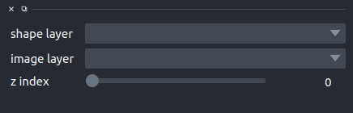

1.4. Usage¶
The following section contains usage instructions for the Napari plugins. For more details on how to use Napari itself please refer to the Napari tutorials.
Note: Please verify as all plugins were installed correctly. You should find them in Napari’s “Plugins/List Installed Plugins…” menu.
1.4.1. Additional Viewport Widget¶
This plugin adds and additional viewport, focused on a selected area from the main view.
To start the widget
Plugins -> Add Dock Widget -> Additional Viewport Widget
This will add a dockable widget, with a viewport window and an interface
{kind=link}
The shape layer dropdown will list all the available shape layer and allow to select one, while
the image layer allows selection of the image layer to visualize.
Finally, the z-index slider allows, in the case of z-stacks, to move between z-layers.
Once a shape layer and an image layer are selected, using the napari shape selection tool will focus the addtional viewport on the bouding box of the currently selected shape in the currently selected image layer
1.4.2. HDF5 Reader¶
The HDF5 file format is an open source file format that supports large, complex, heterogeneous data. HDF5 uses a “file directory” like structure that allows you to organize data within the file in many different structured ways, as you might do with files on your computer.
HDF5 Reader is a dock widget, which makes it easy to visualize data wrapped into hdf5 file format. It opens a dialog window to select the .hdf5 file and then gives the possibility to choose the data by a dropdown menu.
Note
Data are loaded in Napari as Image or Label layer.
1.4.3. TissueMAPS Interface¶
This plugin provides the interface to load and visualize data from a TissueMAPS server. Data is streamed from server, loading only the minimal amount of data needed for the visualization of the current zoom level.
For this plugin to work optimally, the environment variable NAPARI_OCTREE should be set to 1.
The interface is integrated in a widget. To load the widget
Plugin -> Add Dock Widget -> TissueMAPS Connection Widget
{kind=link}
url is the TissueMAPS server URL
username and password are the credential.
Once this data are set, you can click Connect, and the dropdown
experiment will be populated with all the experiments available for the given user.
Selecting an experiment, will populate channel layer dropdown, allowing to select a given channel
inside an experiment.
Finally the Load Data button will load the select channel in a new napari layer.
1.4.4. XML Reader¶
The XML file format is an intermediate solution for reading a series of images. The reader expects a valid XML file structure with a list of “image” elements. Following a simple example:
<?xml version="1.0" ?>
<images>
<image file=".\test001.tif"/>
<image file=".\test002.tif"/>
<image file=".\test003.tif"/>
</images>
Please note as all images must have the same dimensions. For more information/updates please refer to the following GitHub Issue.
Given you have a conform XML file, you can simple drag-n-drop the file into Napari or open the file from within Napari via the “File/Open File(s)…” menu.
1.4.5. ROI Reader¶
The ImageJ/FIJI ROI file format is an intermediate solution for reading shape information. You can create ROIs via ImageJ’s/FIJI’s ROI manager. By selecting/exporting multiple ROIs ImageJ/FIJI creates a ZIP archive which contains all selected ROIs as individual files.
Note: The ROI reader plugin currently support the following ROI types: polygon, rect, oval, line, freeline and freehand.
Given a ROI file or ZIP file contianing multiple ROIs, you can simple drag-n-drop the file into Napari or open the file from within Napari via the “File/Open File(s)…” menu.
1.4.6. Pyramidal TIF Reader¶
Note: Reading fractions of an image (a.k.a. lazy loading) requires advanced data structures which Napari only supports recently. For a smooth user-experience it is recommended to activate the NAPARI_OCTREE flag before running Napari. You can do so from the command line before running napari.
Windows
Linux/Mac
We recommend to create a batch/shell script with the above commands. Deactivating the octree feature at the end avoids conflicts when using Napari with non-multi-scale images later on. If you are not familiar with batch/shell scripts please refer to the following tutorials for Windows and Linux/Mac.
Given you have a multi-scale (pyramidal) TIF file with a PTIF extension, you can simple drag-n-drop the image into Napari or open the file from within Napari via the “File/Open File(s)…” menu.
Note: Fractal does not yet provide a tool to convert large-scale images into multi-scale images. For testing purposes, we recommend to install ImageMagick and convert e.g. the test001.tif image into a test001.ptif image using the following command:
convert.exe test001.tif -define tiff:tile-geometry=1024x1024 -compress jpeg ptif:test001.ptifPlease note as ImageMagick is a very powerful tool which allows you to specify many more options via the command line. For more details please refer to the official reference.